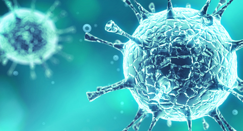
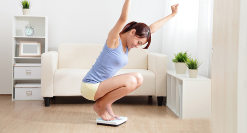
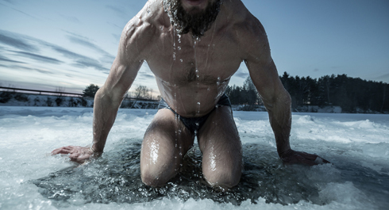
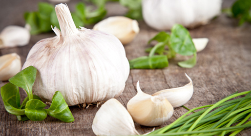

Immunity is the ability of our body to resist the effects of foreign antigenic agents, and the level of this ability depends directly on the things we do or do not do. We have tried to reveal clearly the essence of this issue in today's infopost!
Theory
First of all, there are proteins and nucleic acids that are characterized by antigenicity at the level of molecules, but apart from them there are also polysaccharides, lipopolysaccharides, polypeptides, as well as some artificial high-polymer compounds. There is no organism that does not include at least a few of these molecules – even viruses consist of proteins and nucleic acids (and sometimes polysaccharides), so this protection works "against all".
Antigens are like fingerprints, and that is what the immune system recognizes as "us" and "them". Let's see what the body can respond to:
1. These substances by themselves. If the body receives foreign antigens, it reacts to them, it does, and this protects the body. In most cases, it is impossible to notice these reactions, but sometimes they can be felt.
2. Various infectious agents (viruses, bacteria, fungi, protozoa, helminths) and their waste products.
3. Foreign and dangerous cells that have appeared in one's own body. Every day, mutant and tumor cells are formed in each of us, and the body destroys them quite effectively . If something goes wrong, the cancer will develop.
4. Pharmaceuticals, food, cosmetics, clothing (!) and other surrounding things that our body can get in touch.
5. Some types of plastic, metals, coatings, chemicals.
6. Its own organs and tissues. Such intolerance can occur for various reasons, and this condition is called autoimmune pathology.
It should also be mentioned that our immune system has its own "memory", that is, the ability to remember the antigens with which it encounters through the course of our life, so that to be able to react faster and more effectively at the second meeting. This is what allows us to create vaccinations against certain diseases. However, it should be noted that there are certain antigens which a human organism can't fix in its memory at all, some antigens store for a few years, and others almost for a lifetime.
There's another interesting feature. At the first encounter the immune system is unresponsive to all of the above mentioned substances and only at the second or third meeting it reacts properly. This should be taken into account in case of allergic reactions – if at the first experience the allergy can manifest a small itchy spot, then at the second time the body can respond full on - Quincke's disease(edema) or anaphylactic shock. And the key point of the phrase "I've never had an allergy to this thing before" is that BEFORE you hadn't had any special reaction, but at the second or third experience it showed.
Practice
Let's now go over the methods that can allow you to get sick less often and feel better. Let's try to arrange them in the form of the Chart of importance. Although it may be quite relative, but the main thing is the cumulative effect that will appear if you follow as many items from this list as possible.
Nutrition

The first thing to think about, if we talk about global immune system problems of our population, is whether it eats healthy?
The immune system of an adult is about 1 kg in total. A huge part of it is made up of cells that constantly divide and renew, and this requires a large amount of... no, not vitamins – PROTEIN! If there is a lack of it, especially of amino acids such as glutamine, countless warriors of the immune system - leukocytes, lymphocytes, eosinophils, macrocytes, etc - can not normally multiply.
In addition, the whole system of biological protection is one solid protein. Can this system exist without any adequate nutrition, especially in the case of protein deficiency? (A hint: it can't).
Apart from proteins, the immune system, that works hard every minute and every hour, requires a large number of other nutrients and energy: carbohydrates, polyunsaturated fatty acids, etc. Thus, the first enemy of the immune system: protein energy malnutrition and poor nutrition.
Reducing contact with antigens

Constant contact with antigens disperses the "attention" of the immune system. Except for bacteria, viruses and other "aggressors", the body has to contact every day with an incredible amount of other antigens: food, clothing, pharmaceuticals, perfumes, detergents and cosmetics, pet hair – lot of stuff.
You need to be instilled with the right hygiene skills that will help you reduce the load on the immune system. However, it is important not to get paranoid trying to live in sterile conditions, communicating with the world through a hypoallergenic spacesuit – the immune system will also begin to waste away without some kind of stimulation.
It is obvious that it’s necessary to wash your hands and body, to change clothes in time, to clean your ears and to follow other simple hygienic rules. You need to sanitize (cure) all possible spots of chronic infection: carious teeth, inflammatory skin diseases, intestinal infections, fungi on the legs and nails, etc. – all this affects your immunity, because it is forced to devote its sources where it is not necessary. It is also desirable to minimize contact with ill people.
You need to monitor your reaction to products and other allergens and to avoid contact with them if necessary. In case you are allergic to a pet, and at the same time you are constantly catching colds, you can eat garlic to the state of chili-spiked Korean carrot salad, but you will not stop getting ill, as long as it lives at your home.
Weight watching

Both overweight and underweight show a natural negative impact on the immune system. People with obesity have an increased risk of infectious diseases, blood infection, various skin diseases, their wounds heal badly. A sharp loss of body weight, as well as its constant deficit, is also the risk of complications of the immune system.
Cold training and other health treatments

Conditioning to the cold is stressful. Any stress causes your body to go beyond its regular comfort zone, to feel threatened. In such a case any living organism begins the process of adaptation – it expands the boundaries of its abilities and reserves.
However, you should consider that if one stresses the body sharply and too much, there will be a suppression of all protective systems. The same thing happens when stress is chronic, and the body does not have time to adapt to it (it does not matter whether it is psychological stress or permanent coldness). The mechanisms of self-regulation turn on and rebuild all the systems of the body into a new format of work – during these times the body often remembers old illnesses.
Physical activity
Sports stimulate the immune system and the body's resistance to different irritators using the same mechanisms as cold training. Moreover, there is a number of physiological effects: the work of cardiovascular system improves, the blood goes better (as you remember, it is important for the immune system), hormonal self-regulation works well, there is an increase of metabolic activity, bowel movements are easier and all sorts of pathological processes in the intestine reduce, etc. - too many effects to list them.
Note that hard and abnormal physical activity runs the immune system down. So if you are planning to exercise intensively, try not to supercool and ensure proper nutrition, which includes protein and carbohydrates after a workout.
Healthy sleep
We have already written about this in the other infopost, but still we want to repeat it and remind you that a full healthy sleep is very important to maintain a high level of immunity, while various kinds of sleep deprivation and lack of sleep are stressful for the body and have a negative impact on it.
Psychological comfort
Psychological stress significantly lowers the immunity, as well as it leads to imbalance of all body systems and disruption of their work. So make sure to keep your feet warm and your head cold (in this Russian proverb the cold is meant in a figurative sense; the British equivalent: Keep the bowels open, the head cool, the feet warm and a fig for the doctors).
Everything that improves your mood as music, reading, humor, a positive perception of life, also increases your immune system.
Onions, garlic and other phytoncides

This folk remedy can be attributed to the effective ones. I do not know what's stronger: phytoncides that kill bacteria, or biologically active substances that influence the body. But eating them from time to time, you can improve the functioning of your immune system. Just do not forget that bad breathe can affect the communication.
Pharmaceutical products
If we talk about various plant-derived immunomodulators, I estimate their effectiveness as not very high. You should use any other immunomodulators and stimulants only on the testimony and after a consultation of a competent doctor.
Summer trips to the sea
Resort therapy, especially at the sea (salty air) has an extremely beneficial effect on the whole body, including the immune system (but it is not for everyone, some people need to choose another type of holiday). Keep in mind that the effect occurs only when staying at the resort for a minimum of 2 weeks (acclimatization lasts about 7-10 days), and better for 3-4 weeks in a row.
If coming to the sea is not possible, then get a cheap ticket to a recreation center in a coniferous forest, on the banks of a river (moderate exposure to the sun also plays a great role) or somewhere else. A rest for 2-3 weeks 1-2 times a year is very good for health.
Other stuff
The effect of all that you'll remember combined together (in case you follow at least the first 4 points) can be equated to one point.
All these yogurts, lactobacilli (without any indications), Noni juice, vitamin capsules and pills, salt lamps and silver balls, eucalyptus candles and the living water – all together they can contribute to the treasury of your health a maximum of one payment.
Let's repeat: all of them put together most likely won't be as effective as the full-fledged rational nutrition.
Is it worth spending money on, if there are simple, proven ways, the combination of which will give you the maximum that you can get? You decide.
P.S. Be reasonable. All of the above metioned is guaranteed to be suitable for healthy people, although for the most of the sick ones is not less suitable. But if you are 60 years old and you have obesity, angina and hypertension, and after reading my text you'll begin to lose weight, run, drink lemongrass, dive in the bath and eat onions, then you are more possible to get a heart attack than you are to achieve the strengthening of immunity.